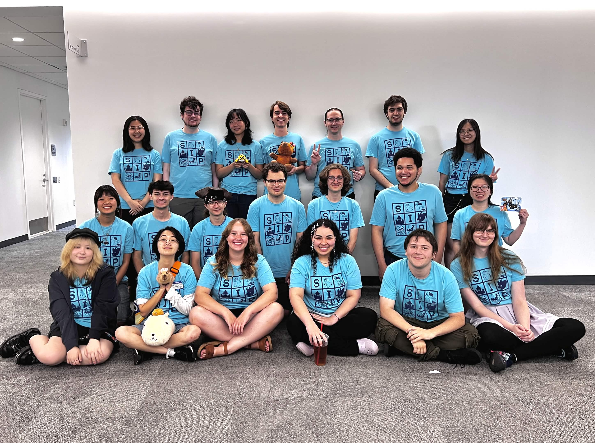
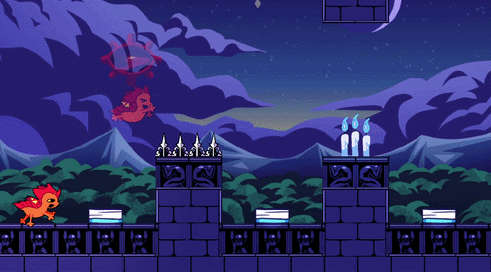
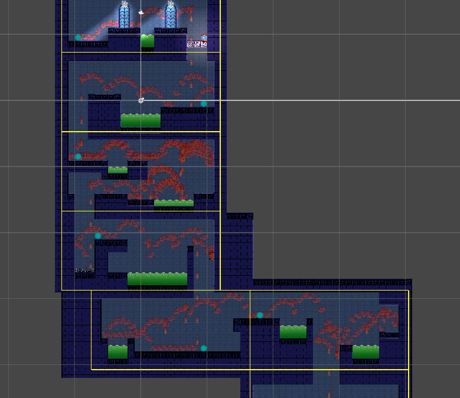
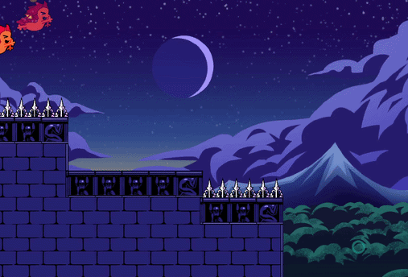
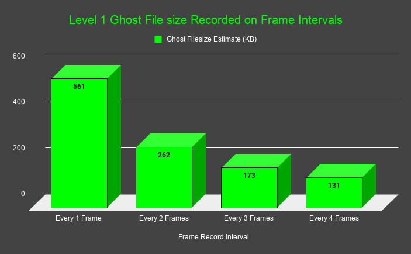
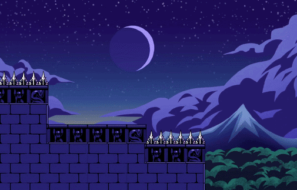

<!DOCTYPE html>

<link rel = 'stylesheet' href='../style.css'>

<!-- Icon Links -->
<link rel="stylesheet" href="https://cdnjs.cloudflare.com/ajax/libs/font-awesome/4.7.0/css/font-awesome.min.css">
<script src="https://cdn.jsdelivr.net/npm/bootstrap@4.6.2/dist/js/bootstrap.bundle.min.js"></script>

<!-- This is the page tab information! (What shows on the browwser for the page window!)-->
<html>
    <head>
        <meta charset="utf-8">
        <meta http-equiv="X-UA-Compatible" content="IE=edge">
        <title>Drop Off Dragon</title>
        <meta name="description" content="The portfolio of Bashar Alqassar: ">
        <meta name="viewport" content="width=device-width, initial-scale=1">
        <link rel="stylesheet" href="">
    </head>
    <body>        
        <script src="" async defer></script>
    </body>
</html>


<!-- Overide for custom background image!-->
<body>

<style>
    body {
        background-image: url("../Images/Backgrounds/Dragon_Night.png");
        background-repeat: no-repeat;
        background-size: cover;
        background-attachment: fixed;
    }


    /*Gradient Components*/
    .topnav, .home-showcase-video, .tool-card, .subpage-text-body, .accordian-content,
    .accordian-button, .general-image, footer, iframe, .home-showcase-video, .project-card-image, .view-more-button
    {
        background: linear-gradient(-45deg, #1d5dff67 0%, #00ffff34 100% );
        box-shadow: 0 0 5px 5px rgba(0, 187, 255, 0.169);
    }


    /*Non-Filter Hover*/
    .tool-card:hover, .topnav a:hover, .view-more-button:hover, .accordian-holder:hover, .accordian-button:hover,
    .home-showcase-video:hover, .project-card-image:hover, .general-image:hover 
    {
        filter: none;
        background: linear-gradient(-45deg, #1d5dff67 0%, #00ffff34 100% );
        box-shadow: 0 0 5px 5px rgb(0, 187, 255);
    }


</style>

    
<!-- Sticky Header Bar, read from right to left on the page-->
    <div id="navbar" class="topnav">
       

        <a class="active" href="../index.html">
            </img>
            Home
        </a>

        <a class="active" href="../index.html#AboutMe">
            </img>
            About Me
        </a>

        <a class="active" href="../Pages/all_projects.html" target="_blank">
            </img>
            Projects
        </a>
        
        <a class="active" href="../Pages/resume_view.html" target="_blank" rel="noopener noreferrer">
            </img>
            Resume
        </a>

        <a href="javascript:void(0);" onclick="show_collapsed()" class="navbar-dropdown">
            </img>
        </a>


        <script>
            function show_collapsed()
            {
                var navbar = document.getElementById("navbar");
                var show_hide_btn_icon = document.getElementById("navbar_showhide");

                console.log(navbar)

                if (navbar.className === "topnav") 
                {
                    navbar.className += " responsive";
                    show_hide_btn_icon.src = "../Icons/x-square.svg";
                    
                } else 
                {
                    navbar.className = "topnav";
                    show_hide_btn_icon.src = "../Icons/menu.svg";
                }
                console.log(navbar)
            }
        </script>       

    </div>

<!-- End of Navbar Template-->


 <!-- Start of subpage template!!! (Fill content here!)-->


<div class="subpage-header-content">


<!-- Project Key Tools used -->
<div class="tool-card-holder">

        <div class="tool-card" type="small">
            </img>
            <a class="tool-card-text" color="white">Unity</a>
        </div>
        <div class="tool-card" type="small">
            </img>
            <a class="tool-card-text" color="white">C#</a>
        </div>
        <div class="tool-card" type="small">
            </img>
            <a class="tool-card-text" color="white">Plastic SCM</a>
        </div>

</div>
        
    <!-- Autoplay Video Widget -->
    <div class="subpage-header-holder">
        <iframe controls class="home-showcase-video" src="https://www.youtube.com/embed/nVyNt1xzX6Q?start=0&loop=1&autoplay=1&mute=1" allow="accelerometer; autoplay; clipboard-write; encrypted-media; gyroscope; picture-in-picture; web-share" allowfullscreen>
        </iframe>
    </div>

</div>


<div class="subpage-header-content" style="column-gap: 100px;">

    <!-- Project Description Intro -->

    <div class="subpage-header-holder">

        <div class="subpage-text-body" style="width: 400px;">
            
            <a class="subpage-text-body-topic">About</a>
            <br>
                Drop Off Dragon is an Auto-Runner Mobile Game featuring a baby dragon who’s goal is to crash and bounce 
                through a magical castle to steal treasure for his hoard! 
            <br>
            <br>
                Drop Off Dragon was fully developed and released during the 2-month internship program at Mass Digi in the Unity Game Engine 
                using Plastic as source control. The core design principle of the project was to create a game that could be easily enjoyed by 
                all ages and easily approached by families and young kids within the mobile game demographic. 
            <br>
            <br>
                My contributions to this project include level design, a player ghost playback system, 
                a tweener pipeline for UI, discovering and resolving many critical bugs and quality assurance. 
        </div>

    </div>

    <div class="subpage-header-holder" >
        <a  href="https://apps.apple.com/us/app/drop-off-dragon/id6778522561" target="_blank">
        <!-- Image -->
        
        </a>
        </div>

</div>


<div class="subpage-header-content">
    <!-- Page Logo -->
    <div class="subpage-header-holder">
        <a>
            
        </a>
    </div>

</div>


<hr class="line_dash_medium">
<div class="PAGE_SPACER"></div>

<div class="subpage-text-body">
    
    <a class="subpage-text-body-topic">Ghost Data System</a>
    <br>
    I developed a data structure and pipeline to record the player playing through a 
    level and to be able to visually play that information in various parts of the application 
    and even in the editor itself.

</div>


<div class="subpage-header-content" style="margin: 50px;">
    <div class="subpage-header-holder">
        <a>
            
        </a>
    </div>

    <div class="subpage-header-holder">
        <a>
            
        </a>
    </div>

</div>

<hr class="line_dash_medium">
<div class="PAGE_SPACER"></div>

<div class="subpage-text-body">
    
    <a class="subpage-text-body-topic">Recording Optimization</a>
    <br>
    It would be ridiculous to record several keypoints of data every single frame of gameplay,
    so the solution I implemented was to record data on a frame interval:
    every 4 fixed updates the game would record a set list of necessary information for proper playback. 

</div>


<div class="subpage-header-content" style="margin: 50px;">
    <div class="subpage-header-holder">
        <a>
            
        </a>
    </div>
        
    <div class="subpage-header-holder">
        <a>
            
        </a>
    </div>

</div>


<hr class="line_dash_medium">
<div class="PAGE_SPACER"></div>


<div class="subpage-text-body">
    
    <a class="subpage-text-body-topic">Smoothed Playback</a>
    <br>
    Playing this data back as is results in the movement appearing choppy,
    so to compensate, the ghost playback is eased to glide from recorded point to
    point for the same interval of time it was recorded for.

</div>


<div class="PAGE_SPACER"></div>

<!--Acordian Code Holder-->
<div  class="accordian-holder">
    <button class="accordian-button">
        </img>
        </img>
        <a>Ghost Data Playback</a>
        </img>
    </button>
    <div class="accordian-content">
<div style="max-width:100%;overflow:auto">
<div style="max-width:100%;overflow:auto">
<pre style="white-space:pre-wrap;word-wrap:break-word;background-color:#121314;color:#BBBEBF"><code> 
<span><span style="color:#8B949E">/// </span><span style="color:#808080">&lt;</span><span style="color:#7EE787">summary</span><span style="color:#808080">&gt;</span></span>
<span><span style="color:#8B949E">/// Called every frame to play back a Ghost Data File to simulate player movement playback </span></span>
<span><span style="color:#8B949E">/// Used by The Hint, Dev and Player PB Ghosts</span></span>
<span><span style="color:#8B949E">/// </span><span style="color:#808080">&lt;/</span><span style="color:#7EE787">summary</span><span style="color:#808080">&gt;</span></span>
<span><span style="color:#8B949E">/// </span><span style="color:#808080">&lt;</span><span style="color:#7EE787">param</span><span style="color:#9CDCFE"> name</span><span style="color:#8B949E">=</span><span style="color:#A5D6FF">"ghostObject"</span><span style="color:#808080">&gt;</span><span style="color:#8B949E"> The Ghost Object to output read data to</span><span style="color:#808080">&lt;/</span><span style="color:#7EE787">param</span><span style="color:#808080">&gt;</span></span>
<span><span style="color:#569CD6">private</span><span style="color:#4EC9B0"> IEnumerator</span><span style="color:#D2A8FF"> PlaybackGhost</span><span style="color:#BBBEBF">(</span><span style="color:#4EC9B0">GhostData</span><span style="color:#9CDCFE"> ghostObject</span><span style="color:#BBBEBF">)</span></span>
<span><span style="color:#BBBEBF">{</span></span>
<span></span>
<span><span style="color:#8B949E">    // Tell the Ghost Object it is being played &amp; Set Active</span></span>
<span><span style="color:#C9D1D9">    ghostObject</span><span style="color:#BBBEBF">.</span><span style="color:#C9D1D9">m_isBeingPlayed</span><span style="color:#D4D4D4"> =</span><span style="color:#569CD6"> true</span><span style="color:#BBBEBF">;</span></span>
<span><span style="color:#C9D1D9">    ghostObject</span><span style="color:#BBBEBF">.</span><span style="color:#C9D1D9">gameObject</span><span style="color:#BBBEBF">.</span><span style="color:#D2A8FF">SetActive</span><span style="color:#BBBEBF">(</span><span style="color:#569CD6">true</span><span style="color:#BBBEBF">);</span></span>
<span></span>
<span><span style="color:#C586C0">    while</span><span style="color:#BBBEBF">(</span><span style="color:#C9D1D9">ghostObject</span><span style="color:#BBBEBF">.</span><span style="color:#C9D1D9">m_frameEvents</span><span style="color:#BBBEBF">.</span><span style="color:#C9D1D9">Count</span><span style="color:#D4D4D4"> &gt;</span><span style="color:#B5CEA8"> 1</span><span style="color:#BBBEBF">) </span><span style="color:#8B949E">// Skip the final value with 1 for easing index</span></span>
<span><span style="color:#BBBEBF">    {</span></span>
<span></span>
<span><span style="color:#8B949E">        //Set sprite &amp; Scale each inverval </span></span>
<span><span style="color:#C9D1D9">        ghostObject</span><span style="color:#BBBEBF">.</span><span style="color:#D2A8FF">GetComponent</span><span style="color:#BBBEBF">&lt;</span><span style="color:#4EC9B0">SpriteRenderer</span><span style="color:#BBBEBF">&gt;().</span><span style="color:#C9D1D9">sprite</span><span style="color:#D4D4D4"> =</span><span style="color:#C9D1D9"> ghostObject</span><span style="color:#BBBEBF">.</span><span style="color:#C9D1D9">m_frameEvents</span><span style="color:#BBBEBF">[</span><span style="color:#B5CEA8">0</span><span style="color:#BBBEBF">].</span><span style="color:#C9D1D9">m_playerSprite</span><span style="color:#BBBEBF">;</span></span>
<span><span style="color:#C9D1D9">        ghostObject</span><span style="color:#BBBEBF">.</span><span style="color:#D2A8FF">GetComponent</span><span style="color:#BBBEBF">&lt;</span><span style="color:#4EC9B0">SpriteRenderer</span><span style="color:#BBBEBF">&gt;().</span><span style="color:#C9D1D9">flipX</span><span style="color:#D4D4D4"> =</span><span style="color:#C9D1D9"> ghostObject</span><span style="color:#BBBEBF">.</span><span style="color:#C9D1D9">m_frameEvents</span><span style="color:#BBBEBF">[</span><span style="color:#B5CEA8">0</span><span style="color:#BBBEBF">].</span><span style="color:#C9D1D9">m_playerDirection</span><span style="color:#D4D4D4"> ==</span><span style="color:#C9D1D9"> Vector2</span><span style="color:#BBBEBF">.</span><span style="color:#C9D1D9">left</span><span style="color:#BBBEBF">;</span></span>
<span></span>
<span><span style="color:#8B949E">        //Set the position</span></span>
<span><span style="color:#C9D1D9">        ghostObject</span><span style="color:#BBBEBF">.</span><span style="color:#C9D1D9">gameObject</span><span style="color:#BBBEBF">.</span><span style="color:#C9D1D9">transform</span><span style="color:#BBBEBF">.</span><span style="color:#C9D1D9">position</span><span style="color:#D4D4D4"> =</span><span style="color:#C9D1D9"> ghostObject</span><span style="color:#BBBEBF">.</span><span style="color:#C9D1D9">m_frameEvents</span><span style="color:#BBBEBF">[</span><span style="color:#B5CEA8">0</span><span style="color:#BBBEBF">].</span><span style="color:#C9D1D9">m_playerPosition</span><span style="color:#BBBEBF">;</span></span>
<span></span>
<span><span style="color:#8B949E">        // Wait for the interval to pass!</span></span>
<span><span style="color:#C586C0">        for</span><span style="color:#BBBEBF">(</span><span style="color:#FF7B72">int</span><span style="color:#9CDCFE"> i</span><span style="color:#D4D4D4"> =</span><span style="color:#B5CEA8"> 0</span><span style="color:#BBBEBF">; </span><span style="color:#C9D1D9">i</span><span style="color:#D4D4D4"> &lt;</span><span style="color:#C9D1D9"> ghostObject</span><span style="color:#BBBEBF">.</span><span style="color:#C9D1D9">m_recordedFrameInveral</span><span style="color:#BBBEBF">; </span><span style="color:#C9D1D9">i</span><span style="color:#D4D4D4">++</span><span style="color:#BBBEBF">)</span></span>
<span><span style="color:#BBBEBF">        {</span></span>
<span></span>
<span><span style="color:#8B949E">            // Ease to the next point</span></span>
<span><span style="color:#FF7B72">            float</span><span style="color:#9CDCFE"> stepTime</span><span style="color:#D4D4D4"> =</span><span style="color:#BBBEBF"> ((</span><span style="color:#FF7B72">float</span><span style="color:#BBBEBF">)</span><span style="color:#C9D1D9">i</span><span style="color:#D4D4D4"> /</span><span style="color:#BBBEBF"> (</span><span style="color:#FF7B72">float</span><span style="color:#BBBEBF">) </span><span style="color:#C9D1D9">ghostObject</span><span style="color:#BBBEBF">.</span><span style="color:#C9D1D9">m_recordedFrameInveral</span><span style="color:#BBBEBF">);</span></span>
<span><span style="color:#FF7B72">            float</span><span style="color:#9CDCFE"> curveValue</span><span style="color:#D4D4D4"> =</span><span style="color:#C9D1D9"> m_tweenEasing</span><span style="color:#BBBEBF">.</span><span style="color:#D2A8FF">Evaluate</span><span style="color:#BBBEBF">(</span><span style="color:#C9D1D9">stepTime</span><span style="color:#BBBEBF">);</span></span>
<span><span style="color:#4EC9B0">            Vector2</span><span style="color:#9CDCFE"> setPos</span><span style="color:#D4D4D4"> =</span><span style="color:#C9D1D9"> Vector2</span><span style="color:#BBBEBF">.</span><span style="color:#D2A8FF">Lerp</span><span style="color:#BBBEBF">(</span><span style="color:#C9D1D9">ghostObject</span><span style="color:#BBBEBF">.</span><span style="color:#C9D1D9">m_frameEvents</span><span style="color:#BBBEBF">[</span><span style="color:#B5CEA8">0</span><span style="color:#BBBEBF">].</span><span style="color:#C9D1D9">m_playerPosition</span><span style="color:#BBBEBF">, </span><span style="color:#C9D1D9">ghostObject</span><span style="color:#BBBEBF">.</span><span style="color:#C9D1D9">m_frameEvents</span><span style="color:#BBBEBF">[</span><span style="color:#B5CEA8">1</span><span style="color:#BBBEBF">].</span><span style="color:#C9D1D9">m_playerPosition</span><span style="color:#BBBEBF">, </span><span style="color:#C9D1D9">curveValue</span><span style="color:#BBBEBF">);</span></span>
<span></span>
<span><span style="color:#C586C0">            if</span><span style="color:#BBBEBF">(</span><span style="color:#C9D1D9">m_doEasing</span><span style="color:#BBBEBF">)</span></span>
<span><span style="color:#BBBEBF">            {</span></span>
<span><span style="color:#8B949E">                // Ease properties </span></span>
<span><span style="color:#C9D1D9">                ghostObject</span><span style="color:#BBBEBF">.</span><span style="color:#C9D1D9">gameObject</span><span style="color:#BBBEBF">.</span><span style="color:#C9D1D9">transform</span><span style="color:#BBBEBF">.</span><span style="color:#C9D1D9">position</span><span style="color:#D4D4D4"> =</span><span style="color:#C9D1D9"> setPos</span><span style="color:#BBBEBF">;</span></span>
<span><span style="color:#BBBEBF">            }</span></span>
<span></span>
<span><span style="color:#8B949E">            // Wait for update depending on playback timescale</span></span>
<span><span style="color:#C586C0">            if</span><span style="color:#BBBEBF">(</span><span style="color:#C9D1D9">ghostObject</span><span style="color:#BBBEBF">.</span><span style="color:#C9D1D9">m_playbackTimescaleImmune</span><span style="color:#BBBEBF">)</span></span>
<span><span style="color:#BBBEBF">            {</span></span>
<span><span style="color:#8B949E">                // Wait for a ratio of secconds realtime to the recorded interval to lerp </span></span>
<span><span style="color:#C586C0">                yield</span><span style="color:#C586C0"> return</span><span style="color:#569CD6"> new</span><span style="color:#4EC9B0"> WaitForSecondsRealtime</span><span style="color:#BBBEBF">(</span><span style="color:#C9D1D9">ghostObject</span><span style="color:#BBBEBF">.</span><span style="color:#C9D1D9">m_frameEvents</span><span style="color:#BBBEBF">[</span><span style="color:#B5CEA8">0</span><span style="color:#BBBEBF">].</span><span style="color:#C9D1D9">m_timeIntervalElapsed</span><span style="color:#D4D4D4"> /</span><span style="color:#BBBEBF"> (</span><span style="color:#FF7B72">float</span><span style="color:#BBBEBF">) </span><span style="color:#C9D1D9">ghostObject</span><span style="color:#BBBEBF">.</span><span style="color:#C9D1D9">m_recordedFrameInveral</span><span style="color:#BBBEBF">); </span></span>
<span><span style="color:#BBBEBF">            }</span></span>
<span><span style="color:#C586C0">            else</span></span>
<span><span style="color:#BBBEBF">            {</span></span>
<span><span style="color:#C586C0">                yield</span><span style="color:#C586C0"> return</span><span style="color:#569CD6"> new</span><span style="color:#4EC9B0"> WaitForFixedUpdate</span><span style="color:#BBBEBF">(); </span></span>
<span><span style="color:#BBBEBF">            }</span></span>
<span></span>
<span><span style="color:#BBBEBF">        }</span></span>
<span><span style="color:#BBBEBF">        </span></span>
<span><span style="color:#8B949E">        //Remove first in array after use</span></span>
<span><span style="color:#C9D1D9">        ghostObject</span><span style="color:#BBBEBF">.</span><span style="color:#C9D1D9">m_frameEvents</span><span style="color:#BBBEBF">.</span><span style="color:#D2A8FF">RemoveAt</span><span style="color:#BBBEBF">(</span><span style="color:#B5CEA8">0</span><span style="color:#BBBEBF">);</span></span>
<span><span style="color:#BBBEBF">    }</span></span>
<span></span>
<span><span style="color:#8B949E">    // End the playback if there are no more frames!</span></span>
<span><span style="color:#C9D1D9">    ghostObject</span><span style="color:#BBBEBF">.</span><span style="color:#C9D1D9">m_isBeingPlayed</span><span style="color:#D4D4D4"> =</span><span style="color:#569CD6"> false</span><span style="color:#BBBEBF">;</span></span>
<span><span style="color:#C9D1D9">    ghostObject</span><span style="color:#BBBEBF">.</span><span style="color:#C9D1D9">gameObject</span><span style="color:#BBBEBF">.</span><span style="color:#D2A8FF">SetActive</span><span style="color:#BBBEBF">(</span><span style="color:#569CD6">false</span><span style="color:#BBBEBF">);</span></span>
<span><span style="color:#C586C0">    yield</span><span style="color:#C586C0"> return</span><span style="color:#569CD6"> null</span><span style="color:#BBBEBF">;</span></span>
<span></span>
<span><span style="color:#BBBEBF">}</span></span></code></pre>
</div>
</div>

    </div>
</div>


<div class="subpage-header-content" style="margin: 50px;">
    <div class="subpage-header-holder">
        <a>
            
        </a>
    </div>

</div>


<hr class="line_dash_medium">
<div class="PAGE_SPACER"></div>


<div class="subpage-text-body">
    
    <a class="subpage-text-body-topic">Level Design Do's and Don'ts</a>
    <br>
    A visual level design bible we created as a baseline guide for designing levels in the game. We opted for making the guide as visual as possible, including measurements and video demonstration of the capabilities of the player to show ourselves and future designers standard practice in the project. 

</div>


<div class="subpage-text-body" style="align-items: center; width: 680px; height: 400px;">
    <iframe src="https://docs.google.com/presentation/d/e/2PACX-1vSh_EqIe3mlLU11AA8fKukIvu1BuX-Y1GNOQPbqBqc53HJVCRLyXSB2vFivNkH6A04mEcTNoZfn4UpZ/pubembed?start=true&loop=true&delayms=5000" frameborder="0" width="960" height="569" allowfullscreen="true" mozallowfullscreen="true" webkitallowfullscreen="true"></iframe>
</div>


 <!-- End of subpage template!!! (Fill content Above!)-->


<!-- Acordian container code (Needs to be below)-->
<script>
var acc = document.getElementsByClassName("accordian-button");
var i;

for (i = 0; i < acc.length; i++) {

// Toggle none state always
//acc[i].nextElementSibling.style.display = "none";

  acc[i].addEventListener("click", function() {
    this.classList.toggle("active");
    var panel = this.nextElementSibling;
    var droparrow = this.getElementsByClassName("accordian-drop-arrow");
    if (panel.style.maxHeight) {
      droparrow[0].style.rotate = "0deg";
      panel.style.maxHeight = null;
    } else {
      droparrow[0].style.rotate = "180deg";
      panel.style.maxHeight = panel.scrollHeight + "px";
    }
  });
}
</script>
 


</body>

<!-- This is a template for the footer! Place on every page!-->

<footer>


    <div>
            <br>
            <a class="written-text">This Website was 100% Developed by Bashar Alqassar (that's me!)<br></a>  
            <a class="written-text"> using Github Pages, HTML, CSS and the Bootstrap Library<br></a>
            <br>
            <a class="written-text">Contact me at </a>
            <a class="link" href="mailto:bbalqassar@gmail.com">BBAlqassar@gmail.com<br></a>
            <a class="written-text">Check out my </a>
            <a class="link" href="../Pages/resume_view.html">Resume</a>
            <a class="written-text">here!</a>

    </div>
    
    <hr style="width:50%;text-align:center;">
    
    <div>
            <a href="mailto:bbalqassar@gmail.com" class="social-link">
                
            </a>
    
            <a href="https://www.linkedin.com/in/bashar-alqassar-974830224/" class="social-link">
                
            </a>
            
            <a href="https://github.com/DocterBuster" class="social-link">
                
            </a>
            
            <a href="https://docterbuster.itch.io/" class="social-link">
                
            </a>
    
    </div>
    
    <div style="clear: both;">&nbsp;</div>
</footer>

<!-- End of Footer Template-->
<html>